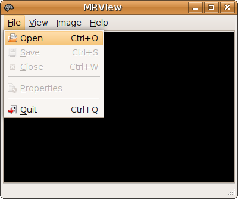
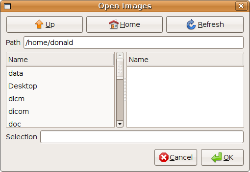
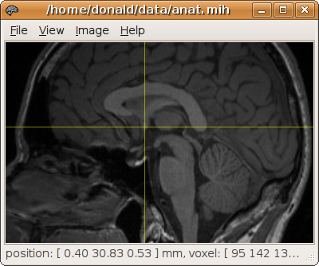
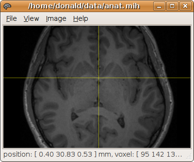
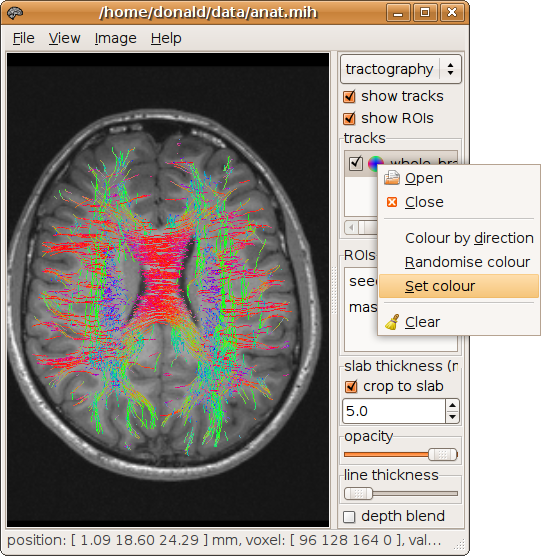

|
|
|
MRView | |
|---|
| Action | Achieved by |
|---|---|
| brightness/contrast | right mouse button + move mouse |
| set projection | A - axial S - sagittal C - coronal |
| scroll | up/down arrows or mouse wheel |
| zoom | Ctrl + mouse wheel |
| pan | middle mouse button (mouse wheel) + move mouse |
| change image volume | left/right arrows |
| cycle through images | Ctrl + PgUp/PgDown |
MRview can be invoked by typing mrview on the command line, double-clicking on the executable, or clicking on the appropriate shortcut (if one is available).
An image can be opened for display in two ways: from the command line (by suppling the image identifier as an argument to mrview), or by using the appropriate dialog, found in the 'File->Open' menu. This is shown below:
 Once loaded, an image can be saved using the appropriate dialog, found in the 'File->Save' menu. As with the command line, the file extension will determine the format of the saved image.
The properties of the image can be displayed in the Properties dialog, found in the 'File->Properties' menu.

Note: images displayed in MRView are displayed assuming radiological convention. In other words, the right side of the subject is displayed on the left of the screen, and vice-versa.
The projection of the image can be changed by using the 'View->Axial', 'View->Sagittal', and 'View->Coronal' menu entries. The keyboard shortcuts 'A', 'S', and 'C' can also be used.
Selecting a particular point on the image by left-clicking will set this point as the current focus (use the 'View->Show focus' menu entry to highlight the current focus using cross-hairs). When the projection is changed, the slice through the current focus will be shown. This provides a quick way to access the desired location. For example, to display an axial slice through the anterior commissure, display the image as a sagittal projection and set the current focus at the desired location, then change the projection to axial:
 Scrolling through the images is done using the up/down arrows, or the mouse scroll wheel. Pressing the Shift key while scrolling will scroll by 5 slices at a time.
Zooming in and out is done by holding down the Ctrl key while using the mouse scroll wheel.
The image can be moved side to side within the display by holding down the middle mouse button and moving the mouse. On a scroll mouse, the middle mouse button is the scroll wheel itself, which can be pressed down without actually turning the wheel.
If the image contains more than 3 dimensions (e.g. there is a time or DW direction dimension), the other volumes contained in the image can be displayed using the left/right arrows.
The image brightness and contrast can be altered by holding the right mouse button and moving the mouse. Moving the mouse left to right increases the brightness of the image, and moving the mouse up increases the contrast.
Multiple images can be loaded into MRView simultaneously, but only one image can be displayed at any one time. To select which image to display, use the 'Image' menu. Alternatively, you can use the Ctrl + PgUp/PgDown keyboard shortcuts to cycle through the images.
MRview will preserve the position of the focus between images, based on the transform (the orientation/position matrix) contained in each image. If no transform is available, a default transform will be assumed. Images loaded or converted from DICOM format should contain the correct transform relative to the scanner axes; these data sets should then be displayed in the same stereotactic space.
Additional functionality is accessed via the sidebar. Select the 'View->Sidebar' menu entry (keyboard shortcut: F9) to display the sidebar. There are a number of tools available, each of which is accessed using the selector at the top of the sidebar:

The tractography tool is used to display tracking results obtained using MRtrix. Track files are displayed by right-clicking on the 'tracks' list, and selecting 'Open' from the popup menu:

By default, tracks are coloured according to their local orientation (red: left-right; green: anterior-posterior; blue: inferior-superior). This can be changed by right-clicking on the track entry and setting a different colour. This is useful to differentiate between two different track files displayed at the same time.
Once loaded, the various ROIs used to generate the tracks will be shown in the 'ROIs' list. Clicking on a particular ROI will place the focus on the centre of the corresponding ROI.
By default, the tracks are cropped to a slab centered on the currently displayed slice of the image. In other words, if the slab thickness is set to 5 mm, only the portions of the tracks that lie within 2.5mm either side of the current slice will be visible. This can be disabled using the appropriate tick-box. Alternatively, the thickness of the slab can be altered in the corresponding entry.
The 'depth blend' tick-box activates a high-quality rendering mode with proper handling of transparency. However, this requires sorting all the points of the tracks by depth, and can severely affect the responsiveness of the display.
The ROI analysis tool is used to generate and edit mask ROI images. A new mask image is created by right-clicking on the ROI list, and selecting 'New' from the popup menu. It is recommended to create the ROI in MRtrix format (*.mif or *.mih). An existing mask image can be loaded using the 'Open' entry of the same popup menu.

Note: all changes made to the ROI image using this tool will immediately be reflected in the file (this is due to the use of memory-mapping to access the image files). Do not load actual data files in this tool, as any changes you might make will irreversibly alter the file.
The newly created image mask is generated using the currently displayed image as a template. In other words, the new mask image will inherit its image dimensions, voxel size and transform from the image currently displayed. However, once created, the mask image can be displayed over a different image and edited as described below.
Voxels are added to the mask by holding the Shift key and clicking the left mouse button on the desired location. Voxels can be removed in a similar way by holding both Ctrl+Shift keys while left-clicking. There is no need to save the ROI, as all changes made will immediately be synchronised with the image file.

The Orientation Plot tool is used to display the Fibre Orientation Distributions (FOD) generated by Constrained Spherical Deconvolution (CSD).
To use it, you first need to load the results of the CSD analysis (click on the "browse" button). The FOD at the current focus (crosshairs) will be displayed in the viewing pane.

The orientation plots can also be overlaid directly on the image in the main window using the 'overlay' tickbox:

|
|
|
top | |
|---|